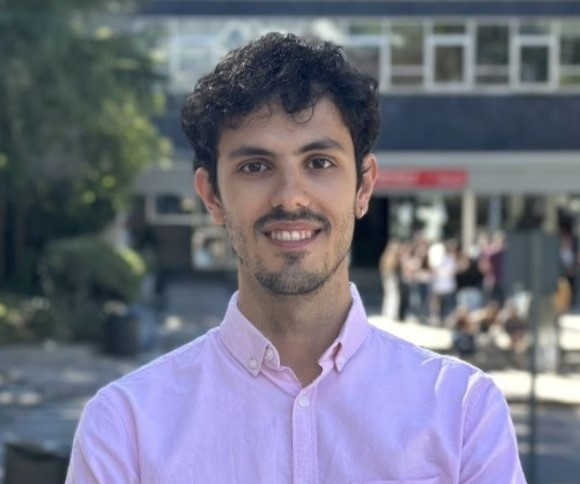

Javier Conde
Assistant Professor
javier.conde.diaz@upm.es
Javier Conde, received a Ph.D. in Telematics Engineering at UPM where he is now an assistant professor in the Department of Telematics Engineering. Since 2024 Javier became a Young Scholar member of the Marconi Society, being the first Spanish researcher to receive this recognition. Javier is coordinating the IEEE Spanish Local Group on AI. His research interests lie in the fields of Digital Twins, Big Data and Artificial Intelligence.
See more